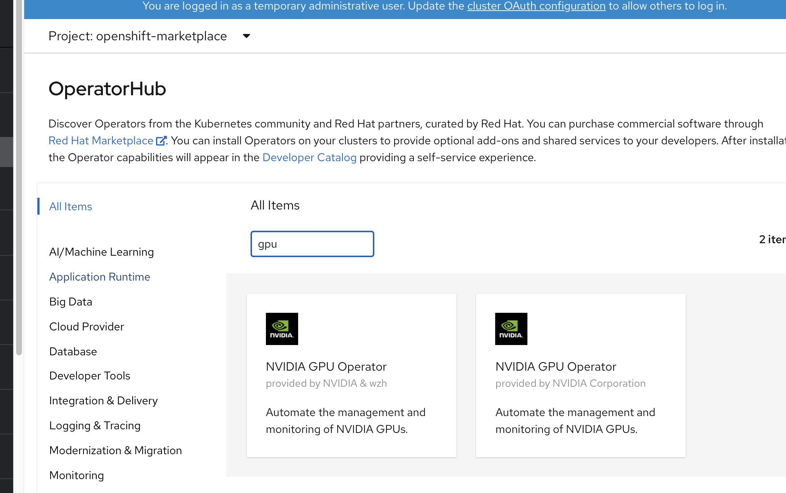
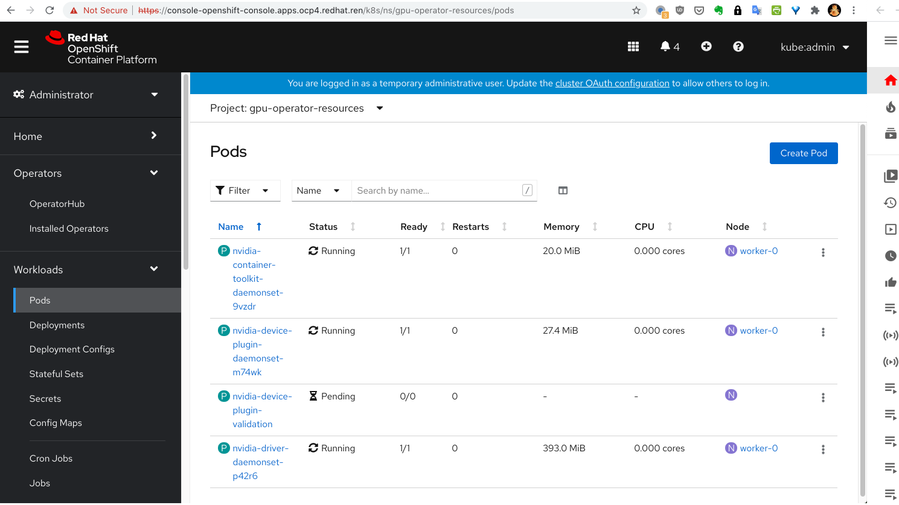
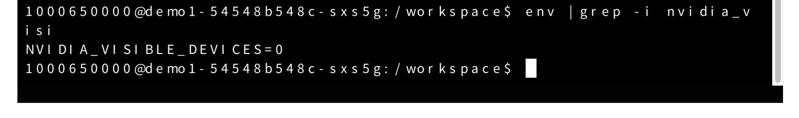
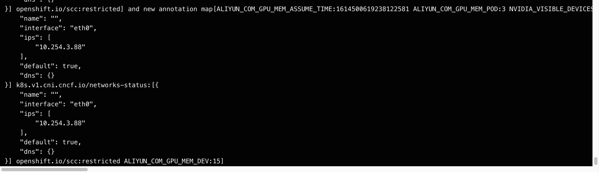
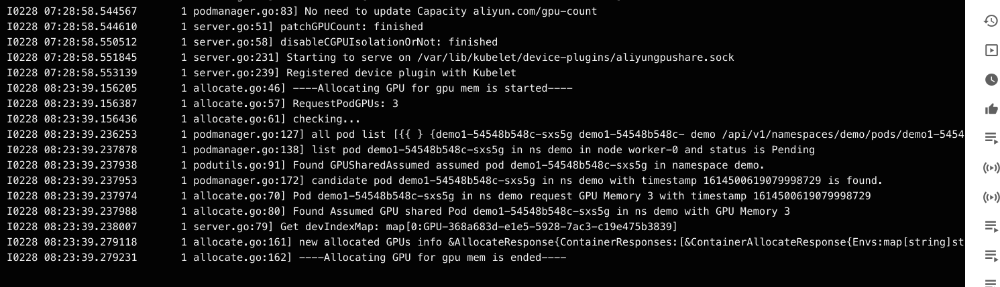

openshift4 上 GPU/vGPU 共享
openshift/k8s集群上，运行了越来越多的AI/ML应用，这些应用大部分需要GPU的支持，但是英伟达/k8s官方的device-plug中，GPU的调度，是按照一块GPU为单元来进行调度的，这就在k8s调度层面，带来一个问题，即GPU资源浪费的问题。
好在社区有很多类似的方案，比如aliyun的方案，就相对简单，当然功能也简单。本文就试图在openshift4上，运行aliyun的gpu共享方案。
由于aliyun等类似的方案，大多基于nvidia-docker，而openshift4使用了crio，所以里面有一点定制化的部分。
由于时间所限，本文只是完成了方案的大致成功运行，完美的运行，需要更多的定制化，这个就有待项目中继续完善吧。
注意
- 这是调度共享方案，不是共享隔离方案
todo
- 在真实的多GPU卡环境中验证。
- 增强scheduler extender安全性
视频讲解
部署运行 scheduler extender
aliyun类似的方案，都是扩展k8s scheduler的功能，来增强k8s已有的功能，在最新版本的openshift4中，已经可以通过配置，把这个scheduler扩展功能激活。
cd /data/install
cat << EOF > ./policy.cfg
{
"kind" : "Policy",
"apiVersion" : "v1",
"predicates" : [
{"name" : "MaxGCEPDVolumeCount"},
{"name" : "GeneralPredicates"},
{"name" : "MaxAzureDiskVolumeCount"},
{"name" : "MaxCSIVolumeCountPred"},
{"name" : "CheckVolumeBinding"},
{"name" : "MaxEBSVolumeCount"},
{"name" : "MatchInterPodAffinity"},
{"name" : "CheckNodeUnschedulable"},
{"name" : "NoDiskConflict"},
{"name" : "NoVolumeZoneConflict"},
{"name" : "PodToleratesNodeTaints"}
],
"priorities" : [
{"name" : "LeastRequestedPriority", "weight" : 1},
{"name" : "BalancedResourceAllocation", "weight" : 1},
{"name" : "ServiceSpreadingPriority", "weight" : 1},
{"name" : "NodePreferAvoidPodsPriority", "weight" : 1},
{"name" : "NodeAffinityPriority", "weight" : 1},
{"name" : "TaintTolerationPriority", "weight" : 1},
{"name" : "ImageLocalityPriority", "weight" : 1},
{"name" : "SelectorSpreadPriority", "weight" : 1},
{"name" : "InterPodAffinityPriority", "weight" : 1},
{"name" : "EqualPriority", "weight" : 1}
],
"extenders": [
{
"urlPrefix": "http://127.0.0.1:32766/gpushare-scheduler",
"filterVerb": "filter",
"bindVerb": "bind",
"enableHttps": false,
"nodeCacheCapable": true,
"managedResources": [
{
"name": "aliyun.com/gpu-mem",
"ignoredByScheduler": false
}
],
"ignorable": false
}
]
}
EOF
oc delete configmap -n openshift-config scheduler-policy
oc create configmap -n openshift-config --from-file=policy.cfg scheduler-policy
oc patch Scheduler cluster --type='merge' -p '{"spec":{"policy":{"name":"scheduler-policy"}}}' --type=merge然后我们就可以部署 scheduler extender 了
curl -O https://raw.githubusercontent.com/AliyunContainerService/gpushare-scheduler-extender/master/config/gpushare-schd-extender.yaml
# replace docker image
cd /data/install
sed -i 's/image:.*/image: quay.io\/wangzheng422\/qimgs:gpushare-scheduler-extender-2021-02-26-1339/' gpushare-schd-extender.yaml
oc delete -f gpushare-schd-extender.yaml
oc create -f gpushare-schd-extender.yamloperator hub 中添加 catalog source
我们定制了nvidia gpu-operator，所以我们要把我们新的operator加到operator hub中去。
#
cat << EOF > /data/ocp4/my-catalog.yaml
apiVersion: operators.coreos.com/v1alpha1
kind: CatalogSource
metadata:
name: wzh-operator-catalog
namespace: openshift-marketplace
spec:
displayName: WZH Operator Catalog
image: 'quay.io/wangzheng422/qimgs:registry-wzh-index.2021-02-28-1446'
publisher: WZH
sourceType: grpc
EOF
oc create -f /data/ocp4/my-catalog.yaml
oc delete -f /data/ocp4/my-catalog.yaml到此，我们就能在 operator hub 中，查找到2个gpu-operator了

安装 gpu-operator 并配置 ClusterPolicies
点击安装 nvidia & wzh 那个。
安装成功以后，创建 project gpu-operator-resources
然后在 project gpu-operator-resources 中，给gpu-operator创建一个ClusterPolicies 配置，使用以下模版创建。不过里面涉及到准备一个离线安装源的操作，参考这里完成。
apiVersion: nvidia.com/v1
kind: ClusterPolicy
metadata:
name: gpu-cluster-policy
spec:
dcgmExporter:
nodeSelector: {}
imagePullSecrets: []
resources: {}
affinity: {}
podSecurityContext: {}
repository: nvcr.io/nvidia/k8s
securityContext: {}
version: 'sha256:85016e39f73749ef9769a083ceb849cae80c31c5a7f22485b3ba4aa590ec7b88'
image: dcgm-exporter
tolerations: []
devicePlugin:
nodeSelector: {}
imagePullSecrets: []
resources: {}
affinity: {}
podSecurityContext: {}
repository: quay.io/wangzheng422
securityContext: {}
version: gpu-aliyun-device-plugin-2021-02-24-1346
image: qimgs
tolerations: []
args:
- 'gpushare-device-plugin-v2'
- '-logtostderr'
- '--v=5'
env:
- name: NODE_NAME
valueFrom:
fieldRef:
fieldPath: spec.nodeName
driver:
nodeSelector: {}
imagePullSecrets: []
resources: {}
affinity: {}
podSecurityContext: {}
repository: nvcr.io/nvidia
securityContext: {}
repoConfig:
configMapName: repo-config
destinationDir: /etc/yum.repos.d
version: 'sha256:324e9dc265dec320207206aa94226b0c8735fd93ce19b36a415478c95826d934'
image: driver
tolerations: []
gfd:
nodeSelector: {}
imagePullSecrets: []
resources: {}
affinity: {}
podSecurityContext: {}
repository: nvcr.io/nvidia
securityContext: {}
version: 'sha256:8d068b7b2e3c0b00061bbff07f4207bd49be7d5bfbff51fdf247bc91e3f27a14'
image: gpu-feature-discovery
tolerations: []
migStrategy: single
sleepInterval: 60s
operator:
defaultRuntime: crio
validator:
image: cuda-sample
imagePullSecrets: []
repository: nvcr.io/nvidia/k8s
version: 'sha256:2a30fe7e23067bc2c3f8f62a6867702a016af2b80b9f6ce861f3fea4dfd85bc2'
deployGFD: true
toolkit:
nodeSelector: {}
imagePullSecrets: []
resources: {}
affinity: {}
podSecurityContext: {}
repository: nvcr.io/nvidia/k8s
securityContext: {}
version: 'sha256:81295a9eca36cbe5d94b80732210b8dc7276c6ef08d5a60d12e50479b9e542cd'
image: container-toolkit
tolerations: []至此，gpu-operator就安装完成了，我们可以看到，device-plugin的validate并没有运行，这是因为，我们定制了sheduler， nvidia.com/gpu 已经被 aliyun.com/gpu-mem 代替。 完美解决这个问题，就需要继续定制化了，但是系统已经能按照预期运行，我们就把定制化留到以后项目中去做好了。

测试一下
我们就来实际测试一下效果
cat << EOF > /data/ocp4/gpu.test.yaml
---
kind: Deployment
apiVersion: apps/v1
metadata:
annotations:
name: demo1
labels:
app: demo1
spec:
replicas: 1
selector:
matchLabels:
app: demo1
template:
metadata:
labels:
app: demo1
spec:
# nodeSelector:
# kubernetes.io/hostname: 'worker-0'
restartPolicy: Always
containers:
- name: demo1
image: "docker.io/wangzheng422/imgs:tensorrt-ljj-2021-01-21-1151"
env:
- name: NVIDIA_VISIBLE_DEVICES
valueFrom:
fieldRef:
fieldPath: metadata.annotations['ALIYUN_COM_GPU_MEM_IDX']
resources:
limits:
# GiB
aliyun.com/gpu-mem: 3
EOF
oc create -n demo -f /data/ocp4/gpu.test.yaml
进入测试容器，看环境变量，我们就能看到 NVIDIA_VISIBLE_DEVICES 被自动设置了

我们进入scheduler extender看看日志， 可以看到scheduler试图给pod添加annotation

我们再进入device-plugin看看日志，可以看到device-plugin在对比内存，挑选gpu设备。
